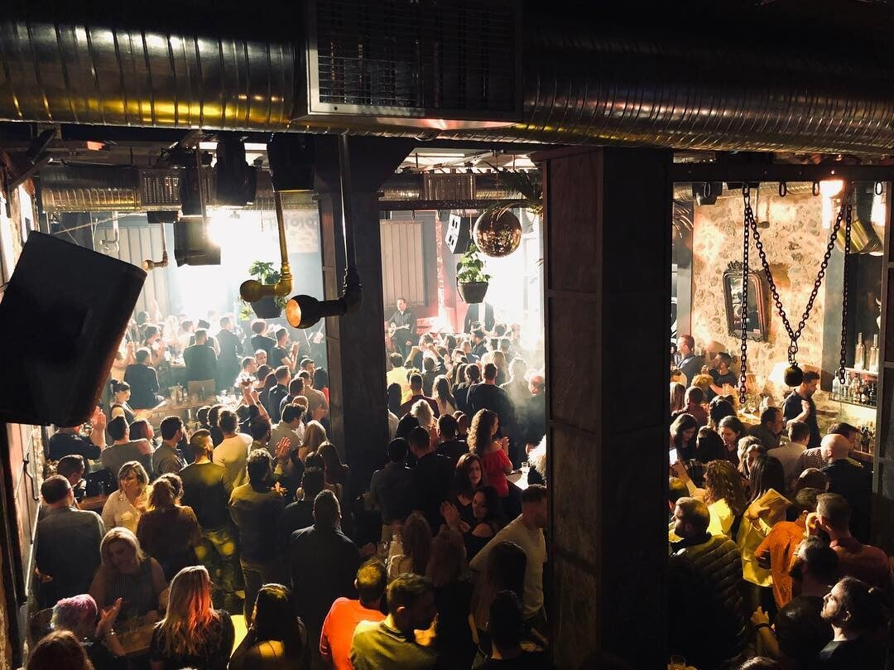
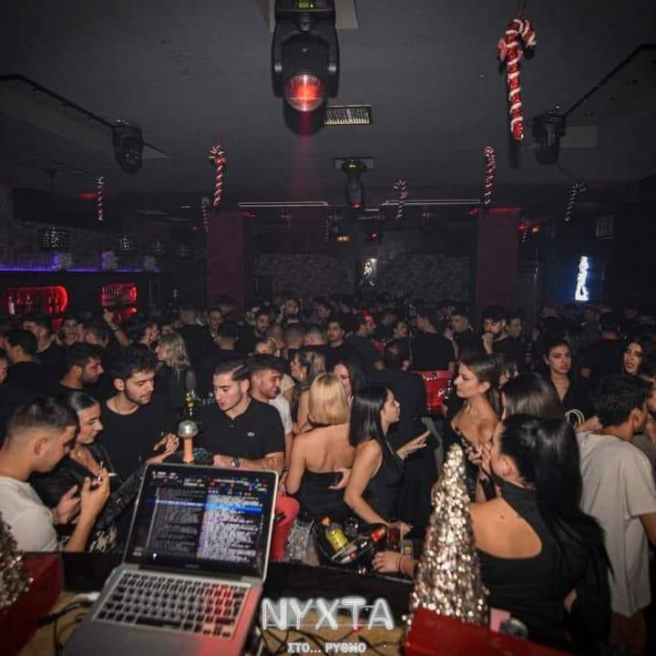

Clubnights & hotspots
Het nachtleven in Kos speelt zich vooral af rond Bar Street, de haven en de oude stad. Clubs en night bars gaan hier door tot laat in de nacht met DJ's, cocktails en volle dansvloeren. De sfeer is levendig, met locals en mensen die er als toerist zijn, maar je kunt ook makkelijk van drukke clubs naar rustigere bars lopen.
Kos-stad tik om te openen tik om te sluiten


Kardamena tik om te openen tik om te sluiten
